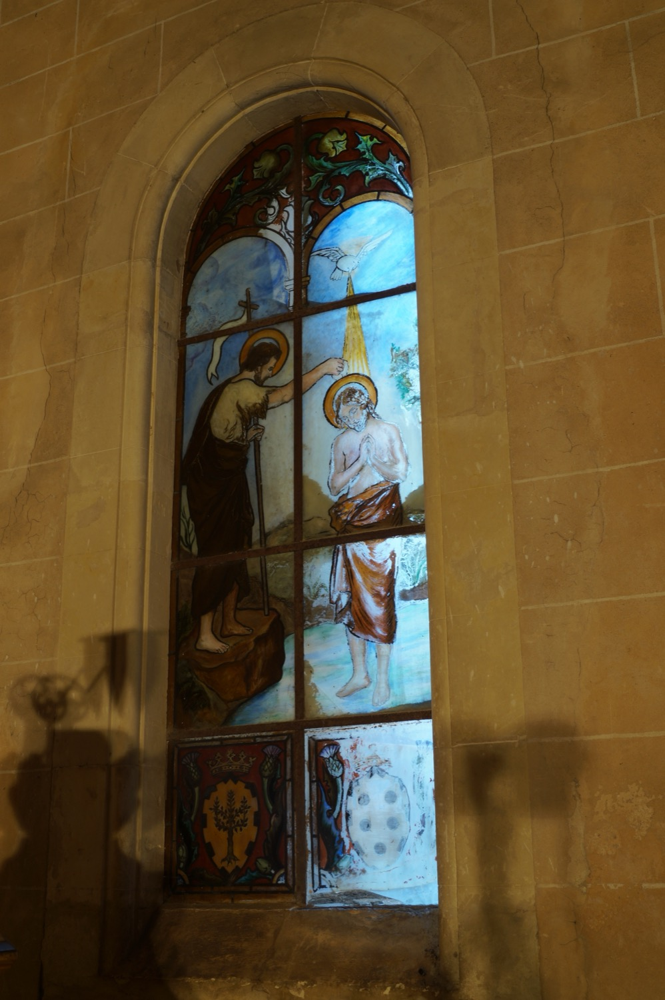

San Juan Bautista (s. I) fue hijo de Isabel, prima de la Virgen María, y de Zacarías, a quien el arcángel san Gabriel anunció el nacimiento de Juan y reveló que sería el precursor del Mesías. Ya de adulto, Juan llevó una vida ascética en el desierto, dedicada a predicar el arrepentimiento de los pecados y a bautizar en el río Jordán a quien quisiera purificarse de sus pecados en preparación para la llegada del Reino de los Cielos. Fue en este contexto que bautizó a Jesucristo poco antes de que este iniciara su vida pública.
Esta vidriera representa el bautismo de Jesús por san Juan Bautista en el río Jordán. Jesús aparece de pie dentro del agua, mientras Juan le vierte agua sobre la cabeza con una concha. Juan sostiene una cruz larga de caña que nos recuerda que conocía el futuro martirio de Jesús; la caña con la que está hecha simboliza la austeridad de la vida de san Juan en el desierto. En la parte superior de la escena aparece el Espíritu Santo en forma de paloma, siguiendo la narración que hace el evangelio de san Lucas de este episodio.
En la parte inferior de la vidriera se observan las armas heráldicas de las familias Sureda (a la izquierda) y Fortuny (a la derecha), los apellidos de los marqueses de Vivot, Joan Miquel Sureda y Bàrbara Fortuny, que financiaron la construcción del nuevo baptisterio en 1907.